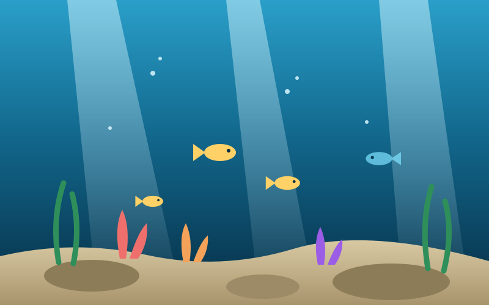

Água rasa e segura
O recife inicial tem luz, peixes pequenos e materiais básicos como titânio e quartzo. É o lugar certo para aprender a coletar sem sustos.
Guia de observação submarina de subnautica
Subnautica se passa em 4546B, um planeta quase inteiro coberto por água. Depois de um pouso forçado, o jogador explora recifes rasos, florestas de algas e fendas profundas enquanto monta uma base e aprende a sobreviver com o que o oceano oferece.
Este site é um guia sobre esse mar: apresenta as zonas de profundidade, as criaturas mais marcantes e a tecnologia usada para descer cada vez mais fundo.

Três motivos para começar a exploração pelo litoral e só depois descer para as zonas escuras.
O recife inicial tem luz, peixes pequenos e materiais básicos como titânio e quartzo. É o lugar certo para aprender a coletar sem sustos.
As algas balançam com a corrente e escondem fragmentos de equipamento. A visibilidade cai, mas a quantidade de recursos aumenta.
Abaixo dos 200 metros a luz acaba. Só se desce com veículo, casco reforçado e energia suficiente para voltar.
Antes de descer, vale organizar a expedição em três passos simples: